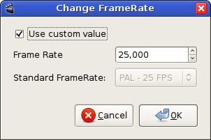
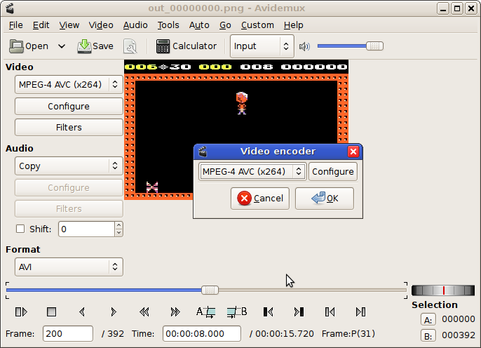

GDash - saving replays as AVI files
The sreplay utility
The sreplay utility is similar to the normal C64-like GDash game.
When you load it, the usual title screen appears. For its own internal workings,
sreplay disables the zoom and scroll settings you selected. But it obeys your
C64 and Atari palette settings. Sound is also disabled.
You can load a caveset
by pressing the L key. After that, the R key will show the available
replays, as it would normally do in the game.
You can select the desired replay with the up/down arrow keys, and save it
with the space key. You are then required to select the filename prefix
for the files saved. The files saved have names like out_00000000.png, out_00000001.png
etc. for the video frames, and out.wav for the audio data. The filename
prefix is out in this case. You can also modify the folder where the
files are saved. Be sure that there are no files with those names already there.
They will be overwritten; also they might be incorrectly recognized by Avidemux
which will do the converting.
You can watch the replay during the saving process, it is shown in real time.
(Currently the saving cannot be speeded up.) Don't be surprised: there
will be no sound. But it is of course saved to the disk.
One minute of audio data takes around 5 megabytes of disk space, and the image
data rate is usually around 4 megabytes per minute.
When the files are saved, you will be shown the replays menu again. Press ESC to
quit the application.
Converting the files to AVI with Avidemux
Avidemux is a simple video conversion application which is freeware. It is
available on both Windows and Unix platforms. It has several built-in codecs, so it does not
require any external utilities to be installed.
The steps to convert the image files to an AVI movie are pretty straightforward.
- Start up Avidemux.
- Choose File|Open, and select the first image file (eg. out_00000000.png) of your
project. Selecting the successive images is not required, as Avidemux will automatically
recognize them. You can now see the first frame of your animation.
- Click Audio|Main Track from the menu. For Audio source, select
External WAV.
Click browse, and import the wave file GDash has written (out.wav.)
- Select Video|Frame Rate from the menu. It should be set to 25 fps. That is the default
value in Avidemux and is also required for the GDash replays, but you should check to make sure it is ok.

- At this point you should be able to preview the video with the play button located at the
lower left part of the Avidemux window. You can also use the scroll bar to seek to any part.
- To save the AVI file, you have to select compression settings. Select Video|Encoder from
the menu. The recommended compressor is MPEG-4 AVC (x264) or MPEG-4 ASP (Xvid4 or lavc).
YouTube recommends x264.

- The sound codec must also be selected in a similar way. Click Audio|Encoder from the menu,
and select MP3 (LAME) or maybe Vorbis.
- You are now ready to save the video. Click File|Save|Save Video, select a file name
and Avidemux will convert your replay in a short time.
The default quality settings are usually suitable for GDash replays. The resulting AVI file
is smaller than 1 megabyte/minute. However if you need even smaller files, or you want better
quality, you can use the two Configure buttons below the video and the audio codec combo
boxes to fine-tune compression settings.
When you are finished, you can delete the WAV file and the images as they are not needed anymore.
Converting the files to an AVI with MPlayer
On Unix, you can also use the command line to create the video.
The easiest way to do that is using the mencoder utility, which is
part of the MPlayer package.
The command line is:
mencoder mf://out_*.png -fps 25 -ovc x264 -x264encopts bitrate=512 -audiofile
out.wav -oac mp3lame -lameopts preset=64 -o out.avi
The meaning of the parameters are:
- mf://out_*.png
- The name of the image files.
- -fps 25
- This tells mencoder, that 25 image files make up a second of video.
- -ovc x264
- Use x264 compression for the video (most advanced and also recommended by YouTube).
- -x264encopts bitrate=512
- Target bitrate of video, 1024kbits/second. Usually 512 is
enough, but you can increase, if you see that the video is of bad quality.
- -audiofile out.wav
- Tells mencoder that the audio input data is to be read from that file.
- -oac mp3lame
- Audio compression is mp3.
- -lameopts preset=64
- Audio quality; 64kbit/s is more than enough as the sound is mono.
- -o out.avi
- Output filename.
As simple as that. Optionally, if your mencoder does not support x264 encoding, you can use
libavcodec mpeg4. The command line to be used is:
mencoder mf://out_*.png -fps 25 -ovc lavc -lavc vcodec=mpeg4:vbitrate=512 -ffourcc DIVX
-audiofile out.wav -oac mp3lame -lameopts preset=64 -o out.avi
I recommend using the -ffourcc DIVX option to increase compatibility with media players
in this case.
Upload and share
Everybody is encouraged to do that! Upload your replay to YouTube so other BD fans
can view it.
Links